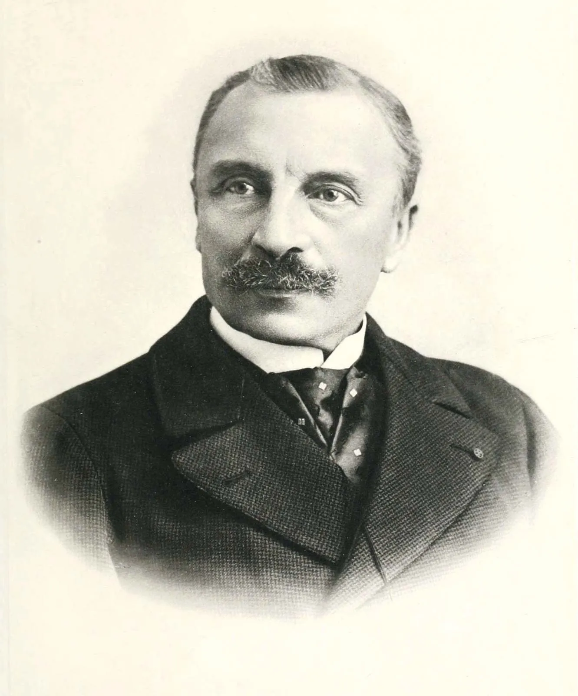
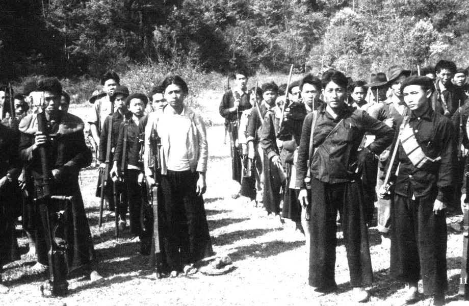
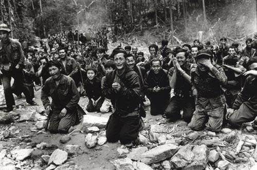

1 A HISTÓRIA DO LAOS, UM PONTO DE PARTIDA
O Laos (República Popular Democrática do Laos) é um país localizado no sudeste asiático que tem como capital a cidade de Vietname. Com aproximadamente sete milhões de habitantes, a língua falada pela população e seu gentílico é laociano.
Figura 14 - Bandeira do Laos

Fonte: WIKIPEDIA, 2023
A história do Laos se inicia há milhares de anos atrás, com vestígios arqueológicos datados de mais de 36 mil anos atrás. Na segunda metade do século XIII, Fa Ngum estabeleceu o primeiro reino unificado de Laos; depois de um período próspero, o reino de Laos enfrentou conflitos territoriais com a Tailândia e Mianmar durante o século XVI.
Embora a ordem tenha sido restaurada por um breve período no século XVII, os conflitos ressurgiram e, no final do século, o Laos foi anexado pelo Vietnã. Após o período do Reino de Lan Xang, houve a dissolução deste e a criação de três outros reinos independentes. Isso ocorreu porque Lan Xang se recusou a se subordinar ao Vietnã e buscou manter distantes os territórios dos países vizinhos.
A história laociana é extensa porém partiremos de um ponto específico, com a “Missão Pavie” com Auguste Pavie sendo enviado ao Laos em 1879. Ele passou muito tempo em Luang Prabang, enquanto ele estava lá, a cidade foi saqueada no ano de 1887 pelos chineses.
Segundo a história que contava Auguste Pavie, ele teria salvo a vida do rei Oun Khaun que ficou tão grato que teria prometido o reino para a França e também o presenteou com a história escrita do Laos baseada em narrativas populares. Ao chegar na França o texto foi traduzido e se tornou o primeiro texto sobre a história do Laos e o primeiro contato dos ocidentais com ela.
É importante destacar a “Missão Pavie” porque a história e cronologia do Laos parte de uma perspectiva dominante com o colonialismo.
Figura 15 - August Pavie
Fonte: BRITANNICA, 2023
2 O COLONIALISMO NO LAOS
O território que hoje é o estado moderno do Laos é resultado do colonialismo francês que dominou o Laos de 1889 a 1949, após o colapso o reino Lan Xang Hom Khao fragmentou-se em estados-clientes dominados pelo reino de Sião. No período de 1862-3, o Império francês incorporou o Camboja e Cochinchina à sua jurisdição e iniciou missões de exploração para o interior do continente.
Após uma curta guerra com Sião em 1893, o Laos foi anexado e em 1898 todas as colônias francesas do sudeste asiático foram consolidadas na Indochina Francesa. A monarquia do Laos em Louangphabang manteve somente uma autonomia simbólica.
No começo do século XX, os imperialistas franceses perceberam que sua meta principal no Sudeste Asiático, que era conquistar Sião, era inviável. O Reino de Rattakonsin tornou-se mais próximo do Império Britânico depois de perder a guerra contra a França.
Portanto, os franceses passaram a enxergar o Laos como uma região fronteiriça que poderia prover segurança para os territórios vietnamitas, que eram muito mais valiosos, e como um lugar para obter recursos para a indústria vietnamita com controle francês, próxima à costa.
Para isso, os franceses exploraram o país para o cultivo de arroz e produção de álcool de arroz, utilizando um sistema de trabalho de corveia não remunerado. Na década de 1920, os franceses ainda estabeleceram uma operação de mineração de estanho e uma plantação de café, mas somente alguns residentes franceses se estabeleceram no país.
No início do século XX, houve uma crescente resistência às instituições coloniais, e um grupo de intelectuais anticoloniais se tornou ativo na luta. Eles tiveram um papel fundamental na criação de uma nova consciência nacional no Laos. As lutas militantes contra o colonialismo ajudaram a moldar e focar o movimento pela independência do Laos, unindo as diversas etnias e culturas não-laocianas em uma causa comum contra o imperialismo francês.
O Laos constituía uma das cinco entidades territoriais que compunham a Indochina Francesa - compreendendo, além disso, a colônia de Cochinchina e os protetorados de Annam, Tonkin e Camboja. Nunca foi, no entanto, um entre iguais. Mesmo antes da anexação dos territórios do Laos a leste do rio Mekong em 1893, o Laos era visto como pouco mais do que uma extensão do Vietnã a oeste em direção ao Sião (Tailândia), um prêmio potencial muito mais significativo. A adição de extensões menores a oeste do Mekong demarcadas por tratado em 1904 e 1907 ainda dava à França não mais do que metade do antigo Reino Laosiano de Lan Xang. Qualquer possibilidade de reconstituir um estado maior do Laos foi posteriormente perdida. (Martin, 2008, p. 111-139)
3 O LAOS NA SEGUNDA GUERRA MUNDIAL
Em 1932, um golpe de estado encerrou a monarquia absoluta de 800 anos no Reino de Rattanakosin e criou uma monarquia constitucional controlada pelos nacionalistas Tai, que renomearam o país para Tailândia. O Khana Ratsadon liderado pelo marechal Plaek Phibunsongkhram visava unir todo os povos Tai, que incluía o Laos, em um único estado.
Durante a Segunda Guerra Mundial, o governo Tai invadiu e anexou várias províncias no vale Mekong enquanto a França estava ocupada pelos nazistas. Os japoneses aliados com os Tai mediaram um acordo de paz com a França de Vichy, usando a crise como uma oportunidade para estabelecer sua presença no Sudeste Asiático.
Os grupos nacionalistas laosianos, vietnamitas e cambojanos continuaram a lutar, e em 1941, Ho Chi Minh retornou do exterior e formou a Liga para a Independência do Vietnã para lutar contra as autoridades coloniais francesas e os ocupantes japoneses.
Em 1945, o governo japonês tomou diretamente a Indochina das autoridades coloniais francesas, formando uma confederação de estados semi-independentes incorporados à sua Esfera de Co-Prosperidade da Grande Ásia Oriental. Embora o Vietnã tenha sido quebrado, o Camboja e Laos se tornaram estados independentes até o final da Segunda Guerra Mundial, quando foram novamente confiscados pelos franceses da monarquia tailandesa.
Figura 16 - Civis na Guerra do Laos contra a ocupação japonesa.
Fonte: A REFERÊNCIA, 2020
4 A GUERRA CIVIL LAOCIANA
A história da guerra do Laos, o país mais bombardeado da história, é ainda pouco difundida pela grande mídia por se tratar do triste resultado de guerras financiadas pelo imperialismo.
Em 1954, o Vietnã obteve uma histórica vitória em Dien Bien Phu contra os franceses, o que levou à independência do Vietnã, Camboja e Laos. Os Estados Unidos intervieram na região para evitar a expansão do socialismo, adotando a chamada "Teoria do Dominó".
Embora a guerra do Vietnã seja amplamente conhecida, o envolvimento dos EUA na Guerra Civil do Laos foi mantido em segredo, apelidado de "A guerra escondida". A CIA gastou US $ 500 milhões em treinamento e armou dezenas de milhares de Hmongs em nome do governo laosiano.
A Trilha Ho Chi Minh era uma rota crucial para o Exército do Vietnã do Norte enviar suprimentos e soldados, e os EUA lançaram várias campanhas de bombardeio contra ela. Entre 1964 e 1973, os EUA lançaram 580 mil bombas e deixaram cair 2 milhões de toneladas de bombas no Laos.
Isso teve um grande impacto no país, matando mais de 50 mil pessoas na Guerra Civil Laosiana e deixando mais de 20 mil mortas pisando em bombas que nunca explodiram.
O presidente dos EUA, Barack Obama, prometeu US $ 90 milhões para ajudar o Laos a desarmar as 80 milhões de bombas de fragmentação estimadas que nunca explodiram. Além disso, durante a Guerra Civil, a CIA traficou narcóticos opiáceos para apoiar as comunidades que estava armando para lutar contra os comunistas, particularmente os Hmongs. O cultivo de papoula em larga escala ainda é um problema na região, e a luta contra o tráfico de drogas continua sendo um grande desafio.
Figura 17 - Guerra civil no Laos
Fonte: MAPA NA MÃO, 2023